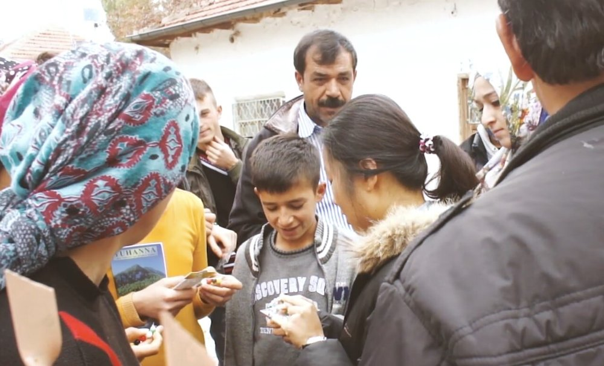
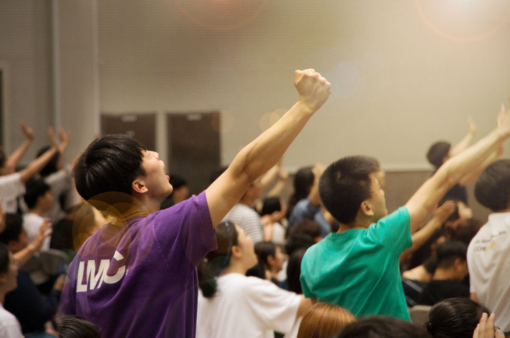
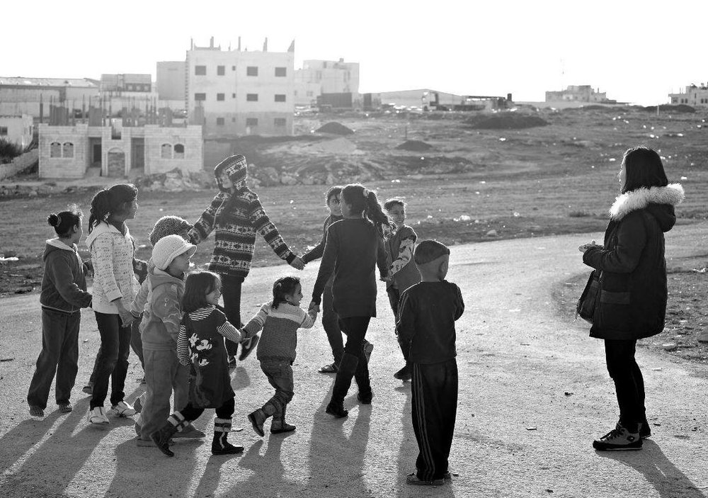

Every nation, tribe,
people and language.
“After this I looked, and there before me was a great multitude that no one could count, from every nation, tribe, people and language, standing before the throne and before the Lamb.” (Revelation 7:9)




